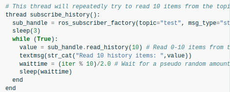
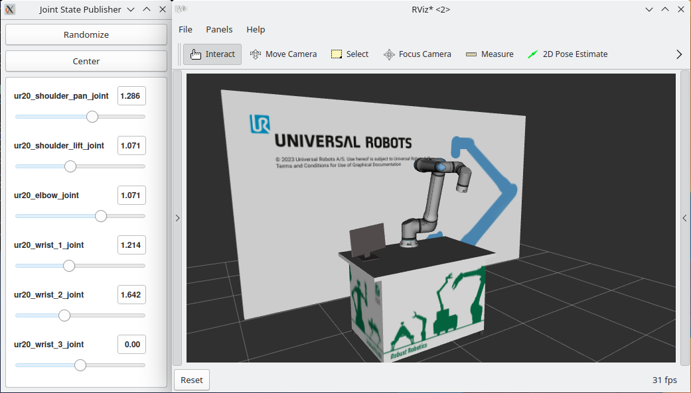

ROS 2 integration paths
There are different paths to use a Universal Robots arm with ROS 2.
ROS 2 on the robot
{kind=link}

Starting with PolyScope X v10.7.0 the robots have builtin ROS 2 support that allows some amount of interaction with the robot without the need of any ROS 2 driver. In particular, the robot publishes a lot of status information and offers services to control e.g. the robot’s I/O ports. See the Topics and Services overview for more information.
Starting with PolyScope X v10.7.0 there is basic URScript support for ROS 2. This allows publishing and subscribing to ROS 2 topics directly in URScript as well as calling ROS 2 services and actions from URScript. See Basic Usage in URScript for details on that.
Note
The builtin ROS 2 support will only be compatible with the ROS 2 distribution running on the robot. For example, PolyScope 10.7.0 is running ROS 2 Humble. It should not be used with any other distribution.
Control the robot from an external ROS 2 application
{kind=link}

To control your robot using ROS 2, you can utilize the ur_robot_driver, an Open-Source ROS 2 driver that is maintained by Universal Robots and offers full compatibility with ros2_control. This driver allows you to visualize the robot’s state in RViz and control its motions through ROS 2. It supports CB3, e-Series, and PolyScope X robots.
By leveraging the ROS 2 driver, you can build your own application on the ROS 2 framework. This includes integrating drivers for other hardware components, incorporating sensors, and utilizing ready-to-use software functionalities such as collision-aware path planning.
The ROS 2 driver communicates with the robot using the ur_client_library.
Build your own external application using the C++ library
With the standalone C++ library “ur_client_library” you can control a UR robot from a remote application. It offers a lot of the functionality that traditionally the robot’s teach pendant would be used for. This includes
Controlling the robot’s power state
Controlling the robot’s motion
Controlling the robot’s I/O ports
Access to low-level interfaces such as the Primary Interface, Dashboard Interface and the Realtime Data Exchange (RTDE).